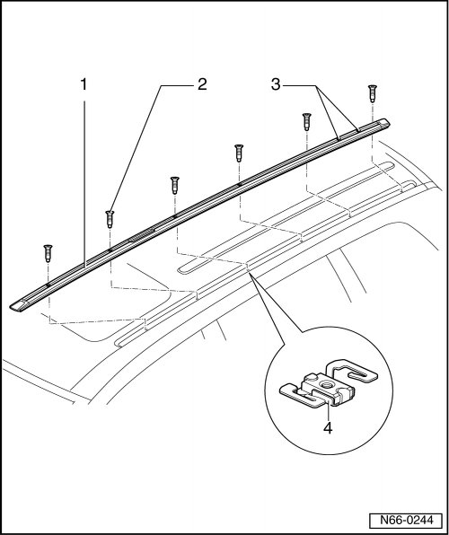
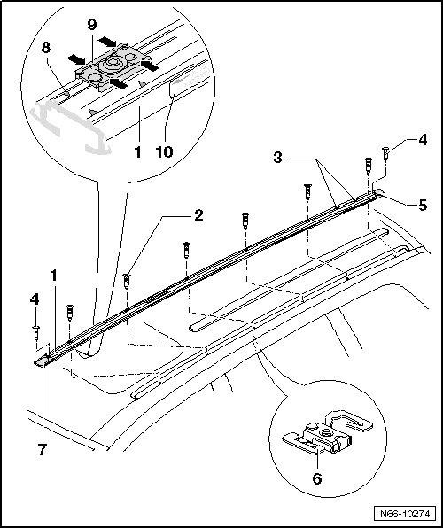

Guide Rail
eRoof Luggage Carrier
Guide Rail
Removing

- Roof luggage carrier bars, remove.
- Remove the bolts - 2 - from guide rail - 1 -.
- Remove guide rail - 1 - upward.
Installation
• New seals should always be used.
• Bolts - 2 - are micro-encapsulated and new ones should always be used during assembly.

- On vehicles with roof luggage basket or rack, end pieces - 5 and 7 - should be secured with rivets - 4 -.
- Install new seals - 9 - on rear side of guide rail - 1 -. Secure these on notches - 8 -.
- Install guide rail - 1 - into the installed position. Note sticker - 10 - with direction of travel indicator on rear side.
- Make sure that both notches for the normal park position - 3 - are located behind the vehicle center.
- Observe the bolting sequence of first two bolts, refer to --> [ Guide Rail Bolting Sequence ] Roof Luggage Carrier